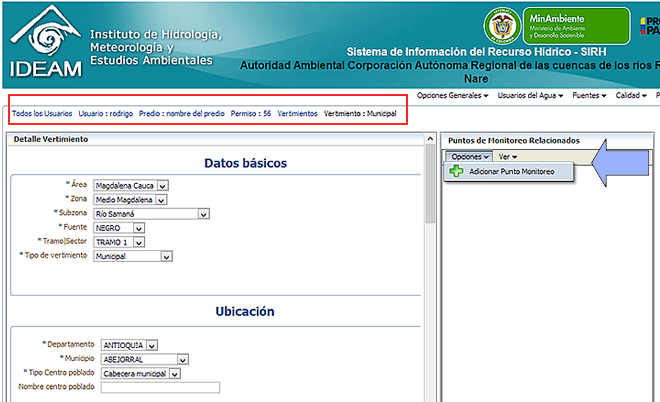

Desde esta sección usted podrá consultar y editar los datos del vertimiento seleccioando. Asimismo, teniendo en cuenta la necesidad de conocer la carga contaminante que un vertimiento aportará a la fuente, el sistema ofrece la posibilidad de agregar los resultados de la primera medición de parámetros químicos realizada al vertimiento, denominada CARACTERIZACION INICIAL. Para ello el sistema requiere que se genere un "Punto de monitoreo" vinculado directamente al "punto de descarga", al cual podrá vincular a futuro todas las mediciones de monitoreo.
Así mismo, podrá asociar Puntos de monitoreo "Aguas arriba" y "Aguas abajo" del vertimiento. Para asociar puntos de monitoreo al Vertimiento de su interés, ingrese a su formulario en modo edición, y de clic en el menú secundario "Opciones", "Adicionar Punto de Monitoreo"
